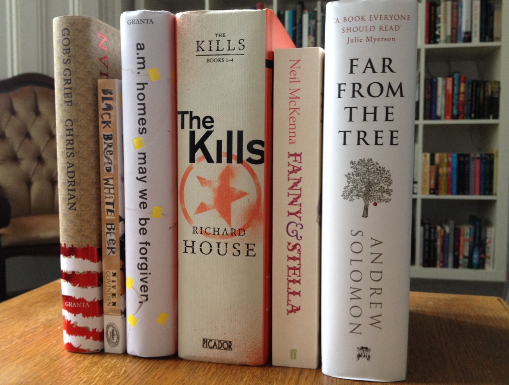

With subjects from the abolition of death in Civil War 1836 to dysfunctional families in modern America; from marital breakdowns to crime and conspiracy over continents; from transvestites in London to tolerance in modern times, it seems that this year’s Green Carnation Prize shortlist has shown once again just what diverse list of titles the prize can produce.
Chair of the judges for 2013, Uli Lenart of Gays the Word, said “The Green Carnation Prize 2013 Shortlist scintillates, satisfies and inspires. The judging panel felt it was these six books that most thoroughly fulfilled our criteria of originality, excellence, readability and resonance.”
{kind=link}

Green Carnation Shortlist 2013
- Gob’s Grief – Chris Adrian (Granta Books)
- Black Bread White Beer – Niven Govinden (The Friday Project)
- May We Be Forgiven – A. M. Homes (Granta)
- The Kills – Richard House (Picador)
- Fanny & Stella – Neil McKenna (Faber and Faber)
- Far From The Tree – Andrew Solomon (Chatto & Windus)
Fellow judge, author Kerry Hudson who was on the shortlist in 2012, said “Our longlist showcased an incredibly diverse range of subject and form but what all the books had in common was excellence. This shortlist could quite easily have been nine or ten books long. Each and every judge had a favourite that they fought hard for which had to make way for another book was not able to be shortlisted. However, we feel this shortlist really represents the very best of an extraordinary longlist of books.”
The winner will be announced in two weeks on the 19th of November. You can find out more about the shortlist on our Shortlist 2013 page.